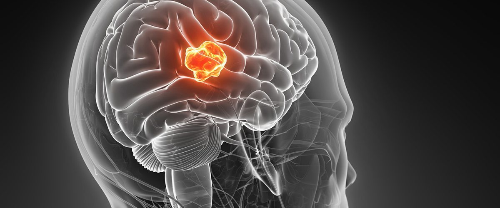

{{result}}

Glioma is a type of tumor that occurs in the brain and spinal cord. Gliomas begin in the gluey supportive cells (glial cells) that surround nerve cells and help them function.
Three types of glial cells can produce tumors. Gliomas are classified according to the type of glial cell involved in the tumor, as well as the tumor's genetic features, which can help predict how the tumor will behave over time and the treatments most likely to work.
Types of glioma include:
- Astrocytomas, including astrocytoma, anaplastic astrocytoma and glioblastoma.
- Ependymomas, including anaplastic ependymoma, myxopapillary ependymoma and subependymoma.
- Oligodendrogliomas, including oligodendroglioma, anaplastic oligodendroglioma and anaplastic oligoastrocytoma.
A glioma can affect your brain function and be life-threatening depending on its location and rate of growth.
Gliomas are one of the most common types of primary brain tumors.
The type of glioma you have helps determine your treatment and your prognosis. In general, glioma treatment options include surgery, radiation therapy, chemotherapy, targeted therapy and experimental clinical trials.